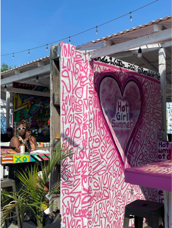
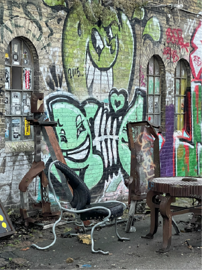
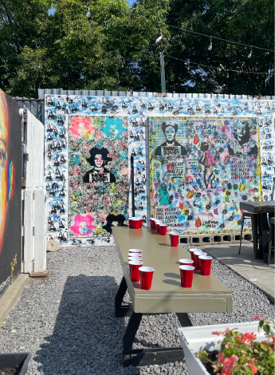

Street Jam Festival
Le 15 octobre 2023, Vevey célèbre les tendances actuelles en matière d'art urbain et de musique, et rassemble une communauté de personnes partageant les mêmes intérêts. Notre événement offre une variété d'activités pour les visiteurs, notamment des démonstrations de skate réalisées par des professionnels, des ateliers de graffiti interactifs, des expositions d'œuvres d'art urbain innovantes et des performances musicales d'artistes locaux et internationaux. Notre objectif est de créer un espace pour que les artistes de rue et les amateurs de culture urbaine puissent se rencontrer, partager leur savoir-faire et leur passion pour l'art urbain et s'immerger dans une ambiance urbaine unique. Notre festival propose également une sélection de stands de restauration proposant une cuisine de rue authentique pour ravir les papilles des visiteurs.
  Skate
09h00-10h00: Inscriptions et accueil des participants
10h00-10h30: Démo de skateboard par des professionnels
10h30-11h30: Atelier d'initiation au skateboard pour les débutants
11h30-12h30: Session de skateboard libre pour les participants
12h30-13h30: Pause
13h30-14h00: Concours de skateboard "Meilleure figure" pour les participants
14h00-15h00: Session de skateboard libre pour les participants
15h00-15h30: Démo de skateboard par des professionnels
15h30-16h30: Atelier de skateboard "Street Style" pour les skateurs expérimentés
16h30-17h00: Remise des prix pour le concours "Meilleure figure"
17h00: Fin de la journée
Veuillez noter que les horaires sont donnés à titre indicatif et peuvent être sujets à des changements. Les participants seront informés des horaires définitifs lors de leur inscription à l'événement.
Musique
15h00-
17h00
Atelier de musique urbaine pour les amateurs de beatmaking et de rap
17h00-
23h00
Concert de hip-hop avec des artistes locaux et nationaux
24h00
Fin de la journée
Street food
Notre festival vous propose une variété de stands de restauration sur place tout au long de la journée. Vous pourrez notamment découvrir
Oh my b!
Un camion de restauration rapide proposant des burgers artisanaux avec des ingrédients frais et locaux.
Con cilantro wey
Un stand proposant des tacos et des burritos à la viande grillée ou végétarienne, accompagnés de guacamole, de salsa et de sauces épicées.
Frankie's Hot Dogs
Un stand proposant des hot-dogs traditionnels, avec une variété de garnitures et des frites fraîches et croustillantes.
Poke Paradise
Un stand proposant des bols de poke hawaïen, avec du poisson frais, du riz, des légumes, des fruits et des sauces savoureuses.
La Bretagne ambulante
Un stand proposant des crêpes et des gaufres sucrées ou salées, avec une variété de garnitures comme des fruits frais, du Nutella, du fromage, des œufs et des légumes.
Smoothies Stop
Un stand proposant des smoothies et des jus de fruits frais, avec des mélanges de saveurs originales et saines pour une pause rafraîchissante.
Contact
Street Jam Festival
Place du Marché 2
1800 Vevey
info@streetjamfestival.ch